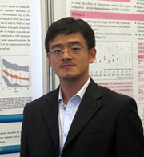

北京大学定量药理学研究团队（PKUPK）


由中国药理学会数学药理专业委员会、北京大学药学院、天然药物及仿生药物国家重点实验室联合主办，北京大学/辉瑞定量药理学高级人才培训中心承办，并获得国际定量药理学会ISoP支持的第四届定量药理与新药评价国际学术会议（The 4th International Symposium Quantitative Pharmacology in Drug Development and Regulation, ISQP）于2013年11月1－3日在北京天坛饭店隆重召开。包括ISoP候任主席和多名理事，以及辉瑞、强生等国际知名企业副总级别的多名高级管理层在内的，来自中国、美国、英国、法国、比利时、新西兰、印度、日本等国家和地区的药品监管机构，学术界、企业界约300名专家学者出席了本次会议，深入探讨了本领域的发展趋势、热点、难点及最新学术思想和研究成果。
作为大会主席的北京大学药学院卢炜教授、药学院院长刘俊义教授、学会名誉理事长孙瑞元教授、杨森全球研发中心定量药理学副总裁Sharma博士先后在开幕式上致辞。
学会包括大会报告和壁报展示，共有40位国内外知名专家作了精彩报告，一批充满朝气和活力的中青年学者也展示了在定量药理学领域所取得的最新成果。主要议题包括：（1）基于模型的方法对药物研发策略和临床实验设计的影响；（2）定量药理学新技术的应用；（3）药物动力学/药效动力学（PK/PD）和疾病进展模型化、生物标记物的发现和定量分析；（4）治疗药物监测和基于模型的个体化给药；（5）药物研发中临床实验设计和PK/PD模型化及仿真实例研究；（6）种族敏感性评价和临床桥接：定量设计和实例研究；（7）基于模型的荟萃分析；（8）基于模型的方法在生物药物中的应用等内容。
在会议期间召开的中国药理学会数学药理专业委员会上，卢炜教授获选连任副主任委员。
本次会议得到了Pfizer、Janssen、Roche、Amgen、博诺威、AB SCIEX和创腾科技等国内外知名企业的资助和支持，其中Janssen公司设立了Janssen Poster Award，以鼓励学科中崭露头角的青年科学家。
此次会议专家阵容强大、内容丰富新颖、交流讨论热烈，得到了与会者们的一致肯定。同时还加强了国内外同行的学术交流，扩大了定量药理学的影响，对我国的定量药理学、新药研发及相关学科发展产生了积极的影响。
Learn More
卢炜教授
北京大学/辉瑞定量药理学培训中心主任
新闻
第四届定量药理学与新药研发国际会议成功举办
2013,11,1 - 11.3, 北京
作为大会主席的北京大学药学院卢炜教授、药学院院长刘俊义教授、学会名誉理事长孙瑞元教授、杨森全球研发中心定量药理学副总裁Sharma博士先后在开幕式上致辞。
学会包括大会报告和壁报展示，共有40位国内外知名专家作了精彩报告，一批充满朝气和活力的中青年学者也展示了在定量药理学领域所取得的最新成果。主要议题包括：（1）基于模型的方法对药物研发策略和临床实验设计的影响；（2）定量药理学新技术的应用；（3）药物动力学/药效动力学（PK/PD）和疾病进展模型化、生物标记物的发现和定量分析；（4）治疗药物监测和基于模型的个体化给药；（5）药物研发中临床实验设计和PK/PD模型化及仿真实例研究；（6）种族敏感性评价和临床桥接：定量设计和实例研究；（7）基于模型的荟萃分析；（8）基于模型的方法在生物药物中的应用等内容。
在会议期间召开的中国药理学会数学药理专业委员会上，卢炜教授获选连任副主任委员。
本次会议得到了Pfizer、Janssen、Roche、Amgen、博诺威、AB SCIEX和创腾科技等国内外知名企业的资助和支持，其中Janssen公司设立了Janssen Poster Award，以鼓励学科中崭露头角的青年科学家。
此次会议专家阵容强大、内容丰富新颖、交流讨论热烈，得到了与会者们的一致肯定。同时还加强了国内外同行的学术交流，扩大了定量药理学的影响，对我国的定量药理学、新药研发及相关学科发展产生了积极的影响。
PMxEC资助学生
| 李良 | 博士 | |
| liliang@bjmu.edu.cn | ||
| 毕业去向 | 北京大学药学院药剂学系 | |
| 研究课题： | ||
| 基于机制的PK/PD模型研究地塞米松对大鼠CYP3A1/2的诱导作用 | ||
| 毕姗姗 | 博士 | |
| Shanshan@bjmu.edu.cn | ||
| 毕业去向 | 辉瑞（中国）研究开发有限公司 | |
| 研究课题： | ||
| PK/PD联合模型在麻醉药物相互作用及新药I期临床研究中的应用 | ||
|  | 尚德为 | 博士后 |
| sunday_1981@sina.com | ||
| 毕业去向 | 广州市脑科医院 | |
| 研究课题： | ||
| 抗高血压药物的群体药物动力学/药效动力学模型，抗精神分裂症药物的群体药物动力学/药效动力学模型 | ||
| 王曦培 | 博士 | |
| wangxipei@gmail.com | ||
| 毕业去向 | 广东省人民医院 | |
| 研究课题： | ||
| 抗哮喘新药临床II期PK/PD模型与预测 | ||
| 程晓亮 | 博士 | |
| cxl_xjtu@126.com | ||
| 毕业去向 | 西安交通大学医学院第一附属医院 | |
| 研究课题： | ||
| 研究甲氨喋呤（MTX）对5-氨基咪唑-4-甲酰胺核苷（AICAR）药物动力学的影响和二者联合给药抗肿瘤药效 | ||
 |
李新刚 | 博士 |
| lxg198320022003@163.com | ||
| 毕业去向 | 北京天坛医院 | |
| 研究课题： | ||
| 艾塞那肽双层微球在大鼠体内的药物动力学/药效动力学研究 | ||
| 邓晨辉 | 博士 | |
| joandch@hsc.pku.edu.cn | ||
| 研究课题： | ||
| 定量药理学在万古霉素治疗药物监测及慢性丙肝肝纤维化疾病进展模型中的应用 | ||
| 周 绚 | 博士 | |
| zhouxuan_yoyo@163.com | ||
| 研究课题： | ||
| 培哚普利在自发性高血压大鼠体内基于机制的PK-PD-疾病进展联合模型研究 | ||
 |
任宇鹏 | 博士 |
| renyupeng.pk@gmail.com | ||
| 研究课题： | ||
| 苯二氮卓及相关药物在人体应用的基于模型的荟萃分析 | ||
 |
王思媛 | 博士 |
| wsy1015@163.com | ||
| 研究课题： | ||
| 抗肿瘤药物联合给药治疗乳腺癌的药动学/药效学研究 | ||